지식 그래프와 LLM: 강력한 조합과 하이브리드 지능형 시스템
Chapter 1–2 · 지식 그래프와 LLM의 결합, 그리고 지능형 시스템 설계
0. 핵심 요약
Chapter 1과 2는 하나의 문제를 두 각도에서 다룬다. LLM은 자연어를 유창하게 다루지만 환각·오래된 정보·맥락과 관계 정보의 부재로 미션 크리티컬한 영역에서 흔들린다. 반대로 지식 그래프(KG)는 검증된 사실과 관계를 정확히 담지만 구축·유지 비용, 다중 홉 질의의 복잡성, 결과의 분산 때문에 널리 쓰이기 어려웠다. 두 기술의 약점이 서로의 강점과 맞물린다는 관찰이 이 두 장을 관통하는 출발점이다.
Chapter 1은 왜·무엇을 설명한다. KG의 정의와 네 기둥, LLM의 토대인 전이 학습, 그리고 둘이 서로를 떠받치는 상호 보완의 논리를 세운다. Chapter 2는 어떻게를 설계한다. 지능을 지식 표현과 추론으로 해부하고, 자율 시스템과 자문 시스템(IAS)을 구분하며, 하이브리드 추론 엔진과 피드백 루프, 그리고 목적 주도 구축 방법론까지 이어간다. 이 리포트는 슬라이드 문장을 늘인 것이 아니라, 처음 읽는 사람이 두 장의 논리를 스스로 따라갈 수 있도록 정의·작동 방식·판단 기준을 함께 남긴 독립 문서다.
- 문제 — LLM만으로도 KG만으로도 부족한 이유는 무엇인가?
- 메커니즘 — 두 기술이 어떤 책임을 주고받아 서로를 강화하는가?
- 판단 — 언제 결합하고, 어디에서 사람이 통제하며, 무엇에서 출발해야 하는가?
| 단계 | 핵심 질문 | 저자의 주장 | 실무 판단 |
|---|---|---|---|
| 문제 | 왜 LLM만으로도, KG만으로도 부족한가? | 각 기술의 강점이 상대의 주요 한계를 보완한다. | 한쪽만으로 정확성·설명 가능성 요구를 충족하지 못한다. |
| 개념 | 지식 그래프란 무엇인가? | 진화·의미·통합·학습 네 기둥을 갖춘 진화형 지식 구조다. | 그래프 저장소가 아니라 지식 수명주기를 먼저 설계한다. |
| 메커니즘 | 왜 함께일 때 더 강한가? | 전이 학습이 낮춘 장벽 위에서 LLM과 KG가 상호 보완한다. | 검증 게이트가 있는 양방향 루프로 운영한다. |
| 표현 기술 | 어떤 그래프·의미 모델을 쓰나? | RDF와 LPG는 배타적 정답이 아니며 필요한 의미만 단계적으로 넣는다. | 질의·통합·추론 요구에서 선택을 시작한다. |
| 지능형 시스템 설계 | 지능을 어떻게 구현하나? | 지능은 지식 표현과 추론이며, 사람을 돕는 자문 시스템(IAS)이 중심이다. | 자문 시스템에서는 최종 결정을 사람이 내린다. |
| 추론·목적 주도 | 무엇을 신뢰하고 어디서 출발하나? | 세 추론에는 한계가 있고, 상향식 대신 목적 주도로 구축해야 한다. | 비즈니스 목적에서 출발해 KG를 중심에 둔다. |
1. 왜 LLM만으로도, KG만으로도 부족한가
- 생성형 AI는 산업을 바꿨지만 전문 지식·정확성·설명 가능성이 필수인 영역에서 흔들린다.
- KG는 유용하지만 구축·유지 비용, 다중 홉 접근, 결과의 분산이라는 세 장벽에 막혔다.
- 진짜 병목은 정형 데이터가 아니라 비정형 텍스트에서 개체·관계를 뽑아내는 일이다.
1.1 생성형 AI의 힘과 구멍
구글의 Gemini나 OpenAI의 GPT가 이끄는 생성형 AI(GenAI)는 일하고 살아가는 방식을 바꾸며 여러 산업을 혁신했다. 그러나 특정 도메인의 전문 지식, 높은 정확성, 설명 가능성이 필수인 영역에서는 힘을 잃는다. 근본 한계는 세 가지다. 그럴듯하지만 사실이 아닌 내용을 지어내는 환각(hallucination), 경험·환경·문화·사회 규범 같은 맥락과 관계 정보의 부재, 그리고 답이 어떤 근거에서 나왔는지 밝히지 못하는 설명 가능성의 부족이다. 저자들은 바로 이 지점에서 KG가 맥락을 제공해, 실패가 허용되지 않는 애플리케이션을 위한 이른바 “AI의 제3의 물결”[Ch1 1]을 세운다고 말한다.
KG는 현실의 개체를 표현하고 그 사이의 의미 있는 연결을 정의하며 맥락을 부여한다. 구조적이고 설명 가능하지만 만들고 질의하기 어렵다. LLM은 자연어 처리에 뛰어나지만 환각·오래된 정보·도메인 근거 부족 문제를 안는다. 저자들이 두 기술을 “강력한 조합(killer combination)”이라고 부르는 까닭은 이처럼 서로 다른 약점을 상호 보완할 수 있기 때문이다.
1.2 지식 그래프의 벽
지능형 시스템 개발에 효과적임에도 KG가 널리 채택되지 못한 데는 여러 이유가 있으며, 교재는 그중 세 가지 대표 장벽을 든다. 첫째, 비용. 만들고 유지하는 데 시간·노력·돈이 많이 든다. 둘째, 까다로운 접근 패턴. 여러 단계(hop)를 건너뛰며 탐색하려면 복잡한 질의가 필요하다. 셋째, 결과의 분산. 원하는 정보가 여러 노드와 관계에 걸쳐 흩어져 있어 비전문가가 읽을 형태로 다시 합쳐야 한다.
KG를 구축하려면 이질적 원천에서 개체와 연결을 인식하고 뽑아내야 한다. 이때 정형·반정형 데이터(관계형 DB, CSV·XML·JSON)는 각 항목이 이미 분리·식별·유형화되어 있어, 원 스키마에서 공통 그래프 스키마로 옮기는 매핑이 통제 가능하고 예측 가능하다. 문제는 정형 데이터가 아니다.
1.3 비정형 데이터 추출이라는 진짜 병목
비정형 텍스트에서 정보를 뽑는 일은 다섯 가지 이유로 늘 까다로웠다. 다국어·문자 체계(언어별 문법·어휘와 라틴·키릴·한자 등 인코딩), 오타·맞춤법 오류, 대명사 즉 상호참조 해소(예: “John saw Bob and he waved”에서 “he”가 누구인지 불명확), 저자별 다양한 문체(동의어·문장 구조·독특한 표현), 그리고 도메인 고유의 전문 용어와 개념이다. 사람의 언어에서 개체와 관계의 경계를 정확히 찾으려면 고도의 기법이 필요하다.
여기서 LLM의 역할은 완성된 사실을 생산하는 것이 아니라, 후보 개체·관계·속성을 빠르게 제안하는 해석 계층이다. 구글이 KG로 검색을 “문자열이 아니라 사물(things, not strings)”로 끌어올린 사례처럼 KG의 가치는 분명하지만, 그 접근을 대중화하려면 자연어로 질문하고 알기 쉬운 요약으로 답을 돌려주는 인터페이스가 필요하다. 이 병목을 도식으로 정리하면 다음과 같다.
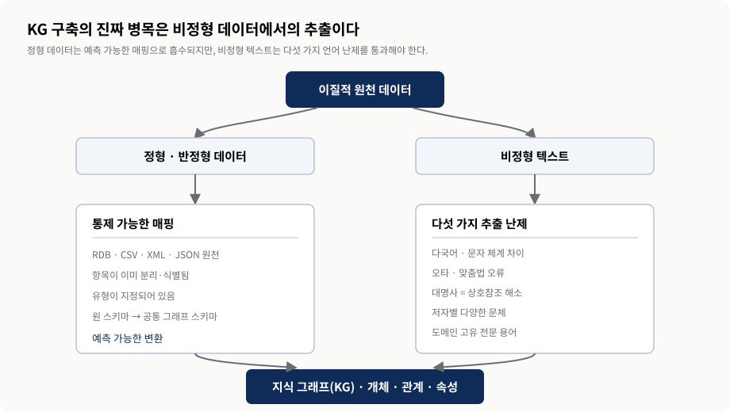
교재 §1.1의 정형·비정형 데이터 논의를 발표용으로 재구성. 오른쪽 다섯 난제는 텍스트 추출이 어려운 이유를 정리한 것이다.2. 지식 그래프란 무엇인가 — 정의와 네 기둥
- KG는 노드(개체)·관계(연결의 의미)·속성(맥락)이라는 세 요소로 지식을 명시적으로 담는다.
- 저자들은 진화·의미·통합·학습의 네 기둥을 갖춘 진화형 그래프 구조로 KG를 재정의한다.
- 의미 기둥은 identity·transitive·inverse 관계와 설명 가능성을, 학습 기둥은 그래프 분석을 뒷받침한다.
2.1 노드·관계·속성
KG는 사람의 지식을 구조화된 형태로 기계에 담아 더 지능적으로 행동하게 만든다. 이를 위해 세 요소를 쓴다. 노드(Node)는 사람·장소·조직·질병·단백질·유전자 같은 현실의 개체를 나타낸다. 관계(Relationship)는 노드 사이의 의미 있는 연결을 정의한다(어떤 약물이 어떤 질병을 치료한다, 어떤 유전자가 어떤 단백질을 암호화한다). 속성(Property)은 맥락을 제공한다(승인일, 지리 좌표, 여러 언어로 된 질병 설명, 출처, 갱신 시각).
핵심은 데이터가 선으로 이어졌다는 데 있지 않다. 연결의 뜻과 개체의 유형이 명시되어 있다는 것이 중요하다. 그래야 기계가 구조화된 지식 위에서 추론과 추정을 수행하고, 관계 경로를 탐색하며, 결과가 어떤 사실에서 나왔는지 설명할 수 있다. 그림 2는 의료 도메인에서 질병·약물·화합물·해부구조 같은 개체가 의미 있는 관계로 연결된 KG를 재구성한 것이다.
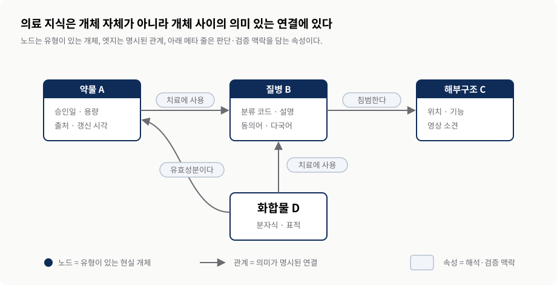
교재 그림 1.1의 개념을 재구성. 실제 의료 KG가 아니라 노드·관계·속성을 읽는 법을 설명하기 위한 예시다.2.2 KG의 정의와 네 기둥
저자들은 기술적·비즈니스적 특징을 아우르는 정의를 제안한다. KG란, 유형이 지정된 개체와 그 속성, 의미 있는 이름을 가진 관계로 구성된, 끊임없이 진화하는 그래프 데이터 구조다. 특정 도메인을 위해 만들어지며 정형·비정형 데이터를 통합해 사람과 기계를 위한 지식을 빚는다. 이 정의는 네 기둥으로 이어진다.
진화(Evolution)는 기존 구조를 뜯어고치지 않고도 새 정보를 계속 수집·통합해 확장한다. 의미(Semantics)는 유형이 지정된 개체와 의미 있는 관계로 데이터의 뜻을 명시하며, 동일성(identity)·이행적(transitive)·역(inverse) 관계 등을 뒷받침해 일관성 검사부터 인과 추론까지의 척추가 되고 설명 가능성[Ch1 13]으로 가는 문을 연다. 통합(Integration)은 데이터의 의미에 초점을 맞춰 형식·출처의 차이를 넘어 여러 원천을 연결하는 중심 기준점이 된다. 학습(Learning)은 영향력 있는 노드를 찾는 중심성 분석, 최단 경로를 보는 네트워크 분석, 비슷한 노드 무리를 찾는 커뮤니티 분석과 규칙·ML로 명시되지 않은 정보를 추정한다.
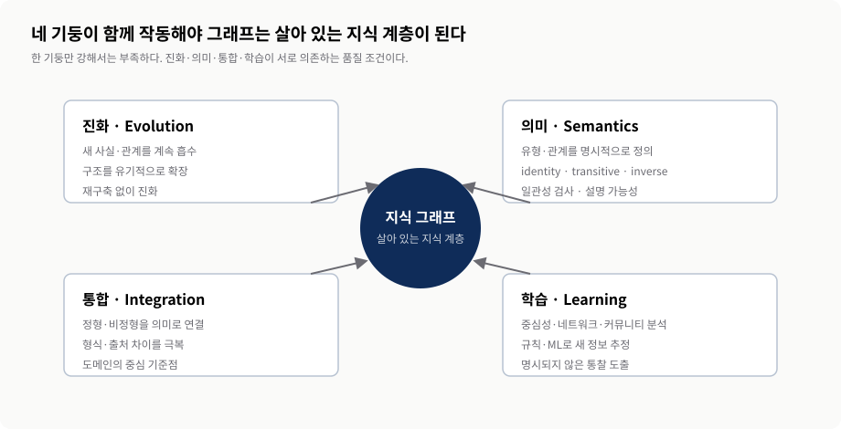
교재 그림 1.6과 §1.4.1을 재구성. 네 요소는 독립 기능 목록이 아니라 함께 있어야 살아 있는 지식 계층이 되는 품질 조건이다.3. 왜 함께일 때 더 강한가 — LLM과 전이 학습, 그리고 상호 보완
- LLM의 토대인 전이 학습은 과제별 소형 모델 다수를 범용 대형 모델 소수로 바꿨다.
- LLM은 KG의 구축·질의·요약을 도와 접근 장벽을 낮춘다.
- KG는 LLM의 환각·오래된 정보·설명 불가를 사실 토대·동적 갱신·추적 경로로 떠받친다.
3.1 LLM의 토대: 전이 학습
LLM의 토대는 전이 학습(transfer learning)이다[Ch1 2]. 일반 과제(예: 가려진 토큰 맞히기)에서 배운 패턴을 특정 과제(예: 관계 추출)에 다시 쓰는 능력이다. 이 돌파구는 과제마다 작은 전용 모델을 여럿 학습하던 방식을 여러 과제에 재사용하는 소수의 거대 모델로 바꾸었다. 그 결과 과제마다 새로 필요하던 지도 학습용 라벨 데이터와 추가 학습 연산은 줄었지만, 거대 모델 자체의 사전학습 데이터와 연산까지 적어진다는 뜻은 아니다. 트랜스포머 아키텍처[Ch1 3]로 대규모 말뭉치를 학습한 사전학습 언어 모델(PLM)은 하나의 큰 모델로 여러 NLP 과제를 수행할 수 있음을 보였고, 규모가 커지며 처리 능력도 확대되었다.
“Scaling Laws for Neural Language Models”[Ch1 9]가 보여 준 두 사실은 함께 읽어야 한다. 더 큰 모델은 같은 테스트 손실에 도달하는 데 더 적은 샘플이 필요할 수 있지만, 동시에 학습 코퍼스의 규모는 여전히 매우 중요하다. 저자는 이를 “데이터의 불합리한 효과성(unreasonable effectiveness of data)”[Ch1 8]과 연결한다. 데이터 품질도 마찬가지다. 잘못된 데이터는 잘못된 예측으로 이어지므로, 모델 구조와 하이퍼파라미터만 다듬는 모델 중심 접근에서 데이터의 양과 품질을 함께 높이는 데이터 중심(data-centric) 접근으로 무게가 옮겨갔다. 저자가 말하는 자연어 과제 지시의 장점은 최소한의 과제별 모델 엔지니어링으로 여러 작업을 시도할 수 있다는 뜻이지, 자연어로 지시하면 항상 정확하다는 보장은 아니다.
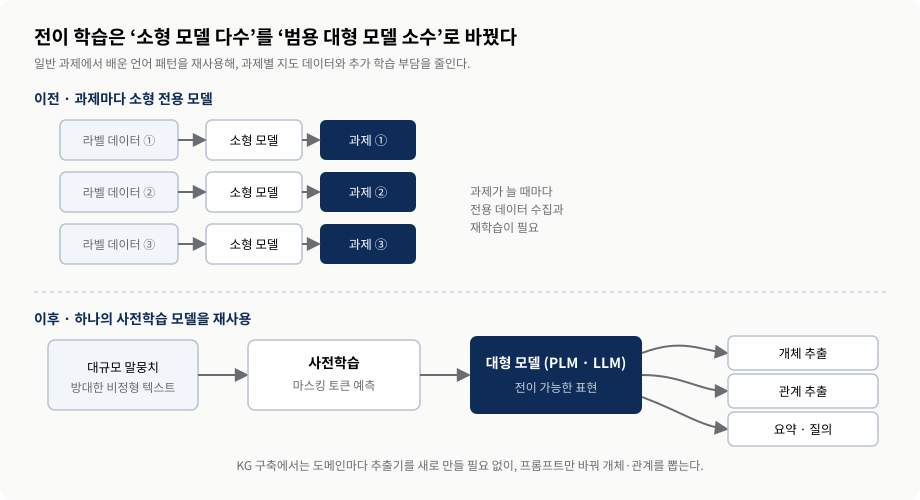
교재 그림 1.2와 §1.2를 재구성. 줄어드는 것은 주로 과제별 지도 데이터와 추가 학습 비용이며, 사전학습 자체의 비용이 아니다.3.2 LLM을 이루는 구성 요소
대규모 언어 모델(LLM)은 대규모 코퍼스로 사전학습된 언어 모델이며, 오늘날에는 보통 매우 많은 학습 가능한 매개변수를 가진다. 입력 텍스트는 토큰화되어 처리 단위로 나뉘고, 각 토큰은 의미와 관계 패턴을 담는 고차원 임베딩으로 표현된다. Transformer와 attention은 문맥에서 관련 부분에 가중치를 주며 대규모 병렬 학습을 가능하게 한다. 이 모델은 방대한 데이터에서 일반 언어 패턴을 배우고, 지시·프롬프트·미세조정으로 여러 과제에 전이된다. 문장 생성은 인간과 같은 이해를 별도 모듈로 수행하는 것이 아니라, 학습한 분포에 따라 다음 토큰을 예측하는 과정을 반복한 결과다.
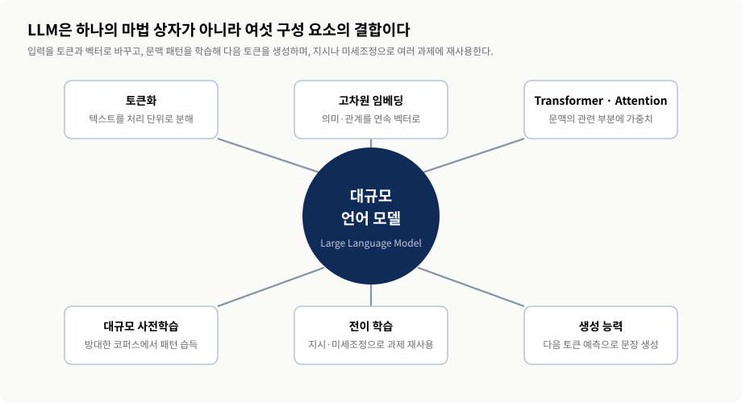
교재 그림 1.3과 §1.2를 재구성. 생성 능력은 학습한 통계 분포에서 다음 토큰을 예측하는 과정의 결과다.3.3 LLM이 KG의 구축과 이용을 돕는 방식
저자들이 강조하는 대표적 역할은 구축·질의·요약이다. 구축에서는 비정형 텍스트의 개체와 관계를 뽑아 후보를 제시한다. 전통적으로 도메인마다 맞춤 NLP 모델이 필요했던 과정을 단순화하지만, 후보는 스키마·출처·무결성·전문가 검토를 통과해야 비로소 KG의 사실이 된다. 질의에서는 여러 홉과 스키마를 이해해야 하는 자연어 질문을 text-to-cypher 같은 그래프 질의나 검색 요청으로 바꾼다. 마지막으로 KG가 돌려준 여러 노드·관계·출처를 사용자가 읽기 쉬운 글로 요약한다. 이 과정은 그림 6처럼 구축 수명주기와 이용 수명주기로 나눠야 책임 경계가 선명해진다.
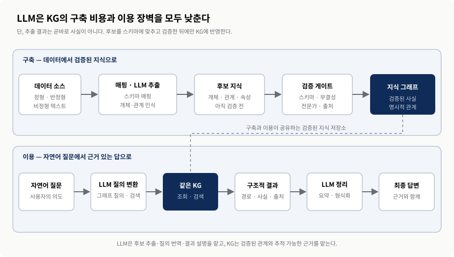
교재 그림 1.4를 구축·이용의 두 수명주기로 확장·재해석. 정형 데이터는 스키마에 매핑하고, 비정형 텍스트의 LLM 추출 결과는 검증 전 후보로 취급한다. 실선 화살표는 처리 방향, 무방향 점선은 두 레인이 같은 검증된 KG를 공유함을 뜻한다.3.4 KG가 LLM을 떠받치는 방식
거꾸로 KG는 LLM의 도메인 정확성·투명성·시의성 한계를 극복하도록 돕는다[Ch1 10]. 환각에 대해서는 구조적이고 검증된 지식으로 사실의 토대가 되어 지어내기를 줄인다. 오래된 정보에 대해서는, LLM을 끊임없이 재학습할 수는 없지만 KG는 계속 갱신할 수 있어 KG 기반 프롬프팅이나 GraphRAG(지식을 군집·커뮤니티 요약으로 조직)로 최신 정보를 공급한다. 설명 가능성에 대해서는, 추적·검증 가능한 정보 경로와 구조적 추론을 제공해 신뢰를 쌓는다. 그림 7은 이 양방향 보완을 매트릭스로 정리한다.
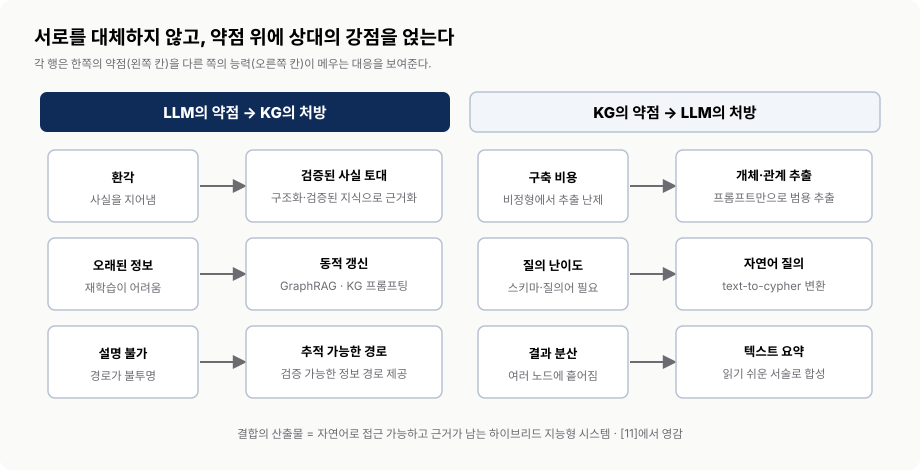
교재 그림 1.5를 재구성. 출처 [Ch1 11]에서 영감을 받았다. 화살표는 단순 검색 한 번이 아니라 구축과 이용의 양방향 수명주기를 뜻한다.4. 표현 기술 — RDF·LPG와 온톨로지, 그리고 패러다임 전환
- KG는 지능적 행동의 근거를 단일 신뢰 원천에 담는 패러다임 전환을 가능하게 한다.
- RDF는 표준 진술·상호운용·연합에, LPG는 고유 엣지·경로 탐색·순회에 강하다.
- 분류체계는 수직 계층을, 온톨로지는 수평 규칙을 더해 그래프에 의미를 불어넣는다.
4.1 단일 신뢰 원천으로의 전환
전통적 패러다임은 구조화되고 동질적인 데이터베이스 위에 특정 목적의 시스템을 만든다. 정해진 요구에는 맞지만, 사용자 특성에 적응하고 이질적 데이터를 통합해야 하는 복잡한 도메인에는 비현실적이다. KG는 연결을 포착해 그래프 패턴 매칭과 순회(traversal)로 관계를 발견하게 하며, 지능적 행동의 근거를 단일 신뢰 원천(single source of trust)으로 공유하는 전환을 가능하게 한다. 이는 모든 원본을 한 곳에 복사한다는 뜻이 아니라, 같은 대상을 가리키는 식별자·관계의 뜻·출처·검증 규칙을 공유하고 필요할 때 원천으로 추적할 수 있다는 뜻에 가깝다. 맥킨지앤드컴퍼니에 따르면 데이터 파편화 문제를 해결하면 단기적으로 연간 데이터 지출을 5~15%까지 줄일 수 있다[Ch1 12].
4.2 RDF와 LPG, 두 갈래 길
이 책은 기술 중립적 접근을 취하며 두 대표 패러다임을 오간다. RDF는 W3C가 정의한 데이터 모델로 그래프를 진술(트리플)의 모음으로 인코딩하고 SPARQL로 질의한다. 웹에서 데이터를 표준적으로 발행·공유하는 데 목표를 두어 상호운용성과 연합에 강하다. LPG는 노드·엣지의 구조(속성과 관계)에 초점을 두고 openCypher나 Gremlin으로 질의한다. 결정적 차이는 관계의 성질이다. LPG에서는 각 엣지가 고유한 정체성과 속성을 가져 “A가 B에서 태어났다”는 관계 하나에 출처·신뢰도를 직접 붙일 수 있는 반면, RDF에서 ‘태어났다’는 지식 베이스 전체가 공유하는 전역 술어(global predicate)다.
| 구분 | RDF (+ SPARQL) | LPG (+ openCypher / Gremlin) |
|---|---|---|
| 표준화 | W3C 표준, 트리플(진술) 기반 | 사실상 구현 중심, 속성 그래프 모델 |
| 질의어 | SPARQL | openCypher · Gremlin |
| 초점 | 지식 표현과 의미 계층 | 그래프 구조(속성·관계) |
| 관계의 성질 | 재사용되는 전역 술어 | 엣지마다 고유한 정체성 |
| 강점 | 상호운용성·일관성·연합(federation) | 경로 탐색·그래프 순회 |
| 관계에 속성 부착 | 개별 관계에 직접 붙이기 번거로움 | 엣지에 출처·신뢰도·시간 직접 부착 |
4.3 분류체계와 온톨로지 — 그래프에 의미를 불어넣기
구조적 정보만으로는 데이터 안의 관계를 온전히 담지 못한다. 저자들은 의미가 가능케 하는 조직 원리[Ch1 15]로 분류체계와 온톨로지를 든다. 분류체계(taxonomy)는 데이터의 수직 계층을 표현한다. 예를 들어 “탈것(Vehicle) ⊃ 자동차(Car) ⊃ 세단(Sedan)”처럼 넓음–좁음의 질서를 잡는다. 온톨로지(ontology)는 계층을 넘어 수평 규칙을 명시한다. “자동차(Car)=오토모빌(Automobile)”이 동일하다거나 “자동차와 자전거(Bicycle)는 서로소(disjoint)여서 같은 것일 수 없다”고 선언하고, 합집합·여집합·개수 제약을 포함한 클래스 정의를 뒷받침한다.
정리하면 분류체계가 “무엇이 무엇의 하위인가”라는 세로 질서만 잡는다면, 온톨로지는 “같다/다르다/공존할 수 없다”는 가로 규칙까지 명시해 기계가 스스로 추론할 근거를 마련한다. 전통적 접근은 이런 체계를 완전하게 정의하려다 경직된다. 현대 KG는 “딱 필요한 만큼의 의미(just enough semantics)”를 취해, 당면 문제에 필요한 온톨로지 기능 일부만 골라 쓰고 부분 온톨로지를 유기적으로 확장한다.
| 구분 | 분류체계(Taxonomy) | 온톨로지(Ontology) |
|---|---|---|
| 표현 차원 | 수직 계층 (세로 질서) | 수평 규칙 (가로 관계) |
| 관계 유형 | 넓음–좁음(상위–하위) | 동일성·차이·서로소·합/여집합·개수 제약 |
| 예시 | Vehicle ⊃ Car ⊃ Sedan | Car = Automobile · Car ⊥ Bicycle |
| 기능 | 범주의 계층 조직 | 일관성 검사와 기계 추론의 근거 |
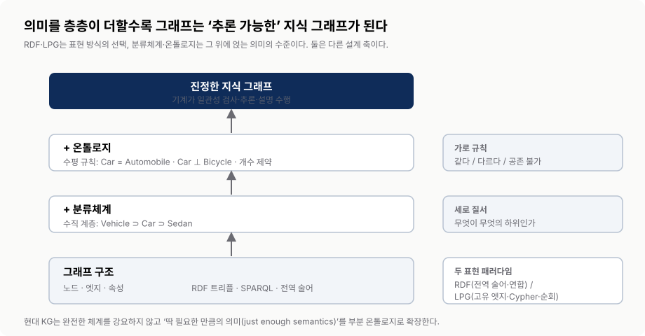
교재 §1.6–1.6.1을 재구성. RDF/LPG 선택과 의미 모델링 수준은 서로 다른 설계 축이다.5. 지능형 시스템 설계 — 지식 표현과 추론의 해부
- 지능은 지식 표현과 추론으로 해부되며, 표현력과 처리 효율 사이에는 상충 관계가 있다.
- 이 책은 사용자를 대체하지 않고 지원하는 자문 시스템(IAS)에 집중한다.
- 지식 습득은 명시적(KG)과 암묵적(LLM)으로 갈리며 접근성·갱신·능력에서 다르다.
5.1 지능 = 지식 표현 + 추론
Chapter 2는 지능을 지식을 습득하고 적용하는 능력으로 보고, 지능형 시스템을 두 구성 요소로 분해한다. 지식 표현(knowledge representation)은 AI 시스템이 도메인 정보를 구조화·부호화·전달할 때 쓰는 “언어”다. 시스템이 추론·예측하려면 이 언어가 필요하고, 우리가 결과를 해석할 때도 이 언어를 본다. 그래서 지식 표현의 선택은 시스템의 능력과 한계를 크게 좌우한다. 추론(reasoning)은 정보를 분석하고 규칙을 적용해 증거·전제로부터 결론을 이끄는 인지 과정이다. 지식 표현이 얼마나 풍부한가와 얼마나 효율적으로 처리되는가 사이에는 흔히 상충 관계(trade-off)가 있으며, 둘은 서로 긴밀히 얽혀 영향을 준다.
5.2 자율 시스템 vs 자문 시스템(IAS)
저자들은 Geoff Hulten의 정의를 따른다[Ch2 1]. 지능형 시스템은 사용자를 AI·ML과 연결해 의미 있는 목표를 달성하게 하고, 사용자와의 상호작용을 관찰함으로써 시간이 지날수록 스스로 개선되는 시스템이다. 이 정의는 사용자의 핵심 역할을 강조한다. 일차 목표는 사용자를 대체하는 대신 지원하는 것이다. 사용자를 지원하는가, 대신 행동하는가에 따라 시스템은 두 범주로 갈린다. 지능형 자율 시스템은 사람 입력 없이 실시간으로 결정·실행한다(예: 자율주행차). 지능형 자문 시스템(IAS)은 통찰·제안·권고를 제공하되 조치를 스스로 실행하지 않는다.
이 책은 IAS에 집중한다. 그 특징(의사결정 지원, 맥락 인식, 상호작용적 사용자 경험)이 KG의 강점과 맞물리기 때문이다. IAS의 사례로는 범죄 데이터를 분석하는 예측 치안, 거래 패턴에서 의심 활동을 표시하는 사기 탐지, 가능한 진단 목록과 치료 선택지를 권고하는 의료 진단 권고가 있다. 모든 경우에서 어떤 조치를 취할지에 대한 최종 결정은 사람이 내린다.
| 구분 | 지능형 자율 시스템 | 지능형 자문 시스템(IAS) |
|---|---|---|
| 역할 | 사용자를 대신해 행동 | 정보와 권고를 제공 |
| 특징 | 완전 자동화·실시간 결정·환경 적응 | 의사결정 지원·맥락 인식·사용자 상호작용 |
| 최종 결정 주체 | 시스템 | 사람(사용자) |
| 예시 | 자율주행차 | 예측 치안·사기 탐지·의료 진단 권고 |
5.3 설계와 구현을 이끄는 네 가지 특성
자율·자문이라는 분류만으로는 좋은 지능형 시스템이 되지 않는다. Chapter 2는 설계와 구현 전체를 이끌 네 가지 특성을 제시한다. 의미 있는 목표는 최종 사용자가 실제로 달성해야 할 구체적이고 실현 가능한 목적이다. 지능적 경험은 예측이 맞을 때 가치를 키우고 틀릴 때 비용을 줄이며, 명시적·암묵적 피드백을 받을 수 있는 인터페이스다. 지식의 생성·갱신은 데이터와 사용자 상호작용에서 지식을 만들고 유지하며 추론하는 지속적 능력이다. 오케스트레이션은 여러 알고리즘과 도구를 연결해 한 출력이 다음 입력이 되게 하고, 지식 습득부터 위험·품질 관리까지 수명주기를 통제한다.
저자들은 구현 범위를 사람을 돕는 지능형 자문 시스템에 두고, 검증된 기존 지식 베이스를 활용하며, 사용자·환경의 피드백이라는 경험에서 학습하도록 설계하는 세 가지 결정도 덧붙인다. 네 특성이 품질 기준이라면, 이 세 결정은 책 전체의 구현 범위를 좁히는 선택이다.
| 특성 | 설계 질문 | 실패 신호 |
|---|---|---|
| 의미 있는 목표 | 최종 사용자가 달성할 구체적이고 실현 가능한 목적은 무엇인가? | 기술·데이터가 목적보다 먼저 정해짐 |
| 지능적 경험 | 정답의 가치는 키우고 오답의 비용은 낮추며 피드백을 받을 수 있는가? | 확률적 제안을 확정 답처럼 제시 |
| 지식 생성·갱신 | 데이터·환경·사용자 반응에서 지식을 만들고 유지하는가? | 출시 시점 지식에 고정됨 |
| 오케스트레이션 | 여러 모델·도구·검증 게이트의 순서, 위험, 품질을 누가 통제하는가? | 출력의 출처와 책임 경계가 불명확 |
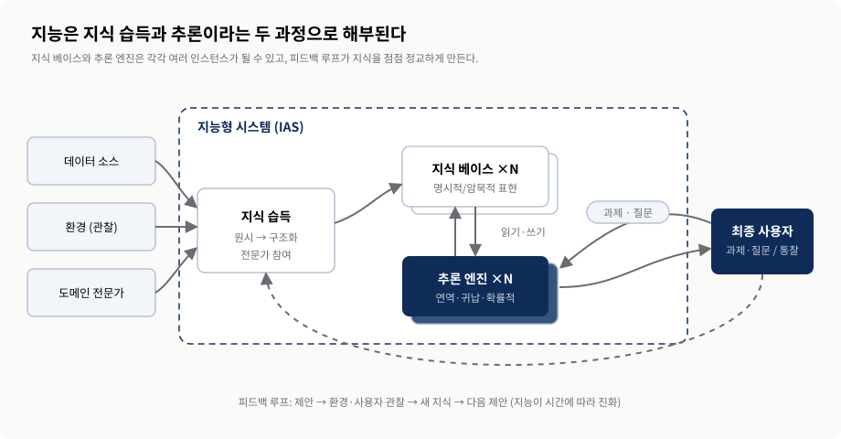
교재 §2.1~2.5(그림 2.1·2.4·2.10)를 종합해 재구성. 지식 베이스와 추론 엔진은 각각 여러 인스턴스를 가질 수 있다.5.4 지식 습득: 명시적(KG) vs 암묵적(LLM)
지식 습득은 원시 데이터를 시스템 요구에 맞는 지식 표현으로 바꾼다. 그 방식은 밑바탕의 추론 메커니즘에 따라 갈린다. KG는 정형·반정형을 포함한 이질적 데이터를 그래프 형식으로 변환하며, 온톨로지·스키마가 변환을 이끌고 도메인 전문가가 소스 선별·모델 설계·결과 평가에 참여한다. 준비에는 수고가 들지만 결과를 사람이 읽고 부분적으로 고치며 여러 질의·추론에 재사용할 수 있다. LLM은 주로 방대한 텍스트를 조밀한 고차원 벡터 공간과 통계 파라미터에 부호화한다. 교재는 이를 대부분 비지도 학습이라고 설명하며, 오늘날 언어 모델 문맥에서는 흔히 자기지도 학습으로 부른다. 주된 노력은 데이터 소스를 고르고 정제하며 대규모 학습을 수행하는 데 든다. 미묘한 문맥을 포착하고 언어를 생성할 수 있지만, 내부 지식을 직접 찾거나 국소적으로 수정하기 어렵다.
| 구분 | 지식 그래프(KG) | 대규모 언어 모델(LLM) |
|---|---|---|
| 표현 방식 | 명시적 — 노드·관계·속성 | 암묵적 — 벡터 공간의 매개변수 |
| 주요 데이터 | 정형·반정형·비정형을 명시적 구조로 변환 | 주로 비정형 텍스트 |
| 습득 방식 | 스키마·온톨로지 기반 변환과 검증 | 대규모 자기지도 학습 중심 |
| 접근성 | 사람·기계가 직접 해석 | 불투명, 해석 어려움 |
| 갱신 | 노드·관계 추가·삭제·수정 | 재학습 또는 미세 조정 필요 |
| 대표 능력 | 통합·경로 탐색·명시적 규칙 추론 | 자연어 이해·생성·문맥 일반화 |
| 도메인 전문가 역할 | 소스 식별·모델 지원·평가에 다수 참여 | 소스 선택·결과 평가에 참여 |
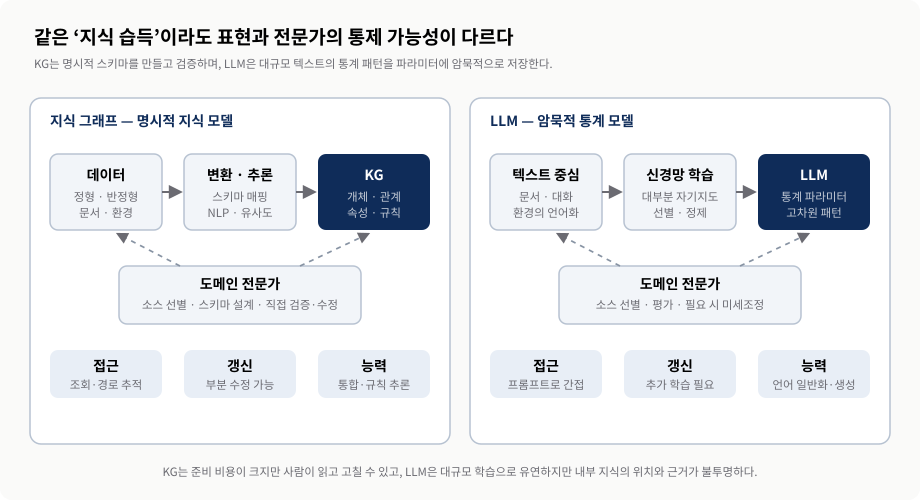
교재 그림 2.6·2.7과 §2.3을 재구성. 두 파이프라인은 전문가 참여의 위치와 결과 지식의 접근·갱신 가능성이 다르다.6. 추론 전략과 하이브리드 추론 엔진
- 연역·귀납·확률적 추론은 각각 결론 확실성과 전제 조건이 다르다.
- 교재의 시점 제한 사례는 LLM이 익숙한 문제의 해법으로 쏠릴 수 있음을 보여 주며, 일반화 여부는 더 넓은 평가로 판단해야 한다.
- 하이브리드 엔진은 KB를 읽고 쓰며 순수 연역의 비현실성을 ML과 LLM으로 보완한다.
6.1 세 가지 추론과 그 한계
연역적 추론은 일반 전제에서 구체적 결론에 이른다. “모든 사람은 죽는다. Alessandro는 사람이다. 따라서 Alessandro는 죽는다”처럼, 전제가 참이면 결론도 반드시 참이다. 귀납적 추론은 구체적 관찰에서 폭넓은 일반화를 이끈다. 다만 전제가 모두 참이어도 결론이 거짓일 수 있다. “주머니에서 꺼낸 동전이 페니였고 두세 번째도 페니이니 주머니의 모든 동전은 페니다”, 또는 “Harold는 할아버지이고 대머리이니 모든 할아버지는 대머리다”가 그런 경우다. 확률적 추론은 LLM의 방식으로, 불확실성 아래에서 여러 가능성을 저울질한다. 추론에는 세 가지 열린 질문이 있다. 불확실성을 어떻게 다룰지, 필요한 지식 일부를 어떻게 도출할지, 본 것에서 어떻게 더 넓은 이해로 일반화할지다. 스팸 필터로 비유하면, 표시된 이메일을 모두 외워 대조하는 방식은 작동할 수 있어도 처음 보는 메일에 라벨을 붙이는 일반화 능력이 없으므로 진정한 학습이 아니다.
| 추론 | 전개 방식 | 결론 확실성 | 전제 조건 | 강점 / 한계 | 담당 기술 |
|---|---|---|---|---|---|
| 연역 | 일반 → 구체 | 전제 참이면 반드시 참 | 완전·정확한 전제 | 정밀 / 완전한 KB 필요 | KG·규칙 |
| 귀납 | 구체 → 일반 | 참이어도 거짓 가능 | 관찰 표본 | 일반화 / 성급한 일반화 위험 | ML |
| 확률적 | 불확실성 하 가중 | 가능성으로 표현 | 패턴·문맥 | 빈틈 보완 / 정답 보증 아님 | LLM |
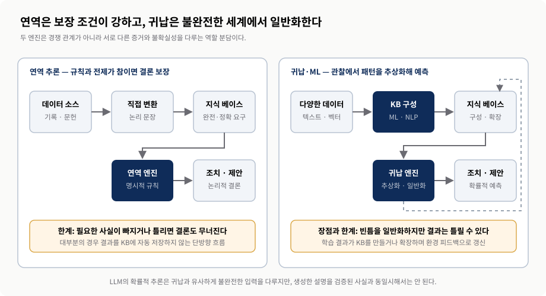
교재 그림 2.11·2.12와 §2.5.1–2.5.2를 재구성. 연역의 보장은 전제의 완전성과 정확성에 조건부이며, 귀납의 일반화는 오답 가능성을 남긴다.6.2 LLM 추론의 착시
저자들은 Claude.ai 3.5 Sonnet에 단순화한 문제를 주었다. “농부가 양 한 마리와 강가에 있고, 한 사람과 동물 하나가 탈 수 있는 배로 최소 횟수로 강을 건너라”는 프롬프트다. 늑대와 양배추가 등장하는 익숙한 문제의 변형이어서, 모델이 실제 조건보다 완전한 옛 문제의 해법으로 쏠릴 것이라고 예상했다. 당시 그 실행에서는 답변이 한 번만 건너면 끝나는 문제를 불필요하게 이어가 가정을 뒷받침했다. 다만 저자도 개선 속도를 고려하면 출간 시점에는 결과가 달라질 수 있다고 명시했다. 따라서 이 한 번의 화면 사례는 특정 모델·시점의 스냅숏으로 읽어야 하며, 모델 세대가 바뀌면 같은 프롬프트의 결과도 달라질 수 있다. 모든 LLM에 영구히 적용되는 벤치마크로 일반화해서는 안 된다.
더 넓은 근거는 별도로 보아야 한다. Wu 등[Ch2 4]은 코딩·그림·논리·공간 추론·체스·산술 등 11개 과제에서 반사실적(counterfactual) 변형(기본값이나 익숙한 형태에서 벗어난 경우)을 테스트해, 기본 조건 대비 성능이 상당히 그리고 일관되게 저하됨을 보고했다. 이 결과는 익숙한 절차가 새로운 조건으로 안정적으로 전이되지 않을 수 있음을 보여 준다. 그래서 정밀한 규칙·명시적 지식이 필요한 과제에는 KG와 검증 가능한 추론을, 패턴 인식·문맥 이해·모호하거나 불완전한 정보 처리에는 LLM을 배치하고, 모델 세대가 바뀌어도 평가를 반복해야 한다.
6.3 하이브리드 추론 엔진과 피드백 루프
추론 엔진은 한 유형만 쓸 수도, 여러 전략을 조합할 수도 있다. 순수 연역 엔진은 대개 KB를 읽어 조치·제안을 만드는 단방향 흐름이지만, 귀납·학습·하이브리드 엔진은 관찰을 처리해 KB를 만들거나 확장할 수 있다. 엔진이 만든 조치·제안은 환경에 영향을 주고, 환경은 새 관찰을 만들며, 검증된 관찰이 새 지식이 되어 다음 조치를 이끈다. 이 피드백 루프가 반복적 개선을 만든다. 의료 진단 맥락에서 순수 연역은 KB가 완전하고 정확하면 논리적 결론을 보장하지만 현실에서 그 조건을 만족하기 어렵다. 귀납·ML은 관련 온톨로지와 관계를 학습·구축해 KB를 확장하고 불확실성 아래에서 일반화한다. LLM 계층은 결정적 정보가 빠졌을 때 문헌에서 배운 패턴으로 여러 가능성을 저울질해, 하나의 확정 답 대신 우선순위가 매겨진 권고를 제안할 수 있다. 이 제안은 검증된 사실이나 확정 진단과 구분해야 한다.
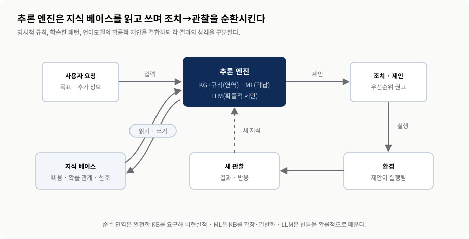
교재 §2.5(그림 2.10)을 재구성. 귀납·학습·하이브리드 엔진은 검증된 관찰로 지식 베이스를 확장할 수 있고, 조치→환경→관찰이 다음 제안을 개선한다.7. 목적 주도 설계와 도입 판단
- 모든 데이터부터 쌓는 상향식은 소스 과다·정규화 비용 때문에 흔히 실패한다.
- 목적 주도 접근은 CRISP-DM을 재해석해 비즈니스 이해에서 출발한다.
- 도입 판단은 기술 이름이 아니라 문제의 모양(관계·통합·자연어·근거)에서 시작한다.
7.1 상향식의 함정 vs 목적 주도 접근
KG를 단지 지식의 집계자로만 보면, 애초에 KG를 도입한 목표인 지능형 시스템 구축을 놓친다. 데이터부터 쌓아 올리는 상향식(bottom-up)은 여러 소스를 하나의 신뢰 원천으로 통합한 뒤, 최종 사용자가 무엇을 찾는지에 대한 생각 없이 데이터가 알아서 이야기해 주길 기대한다. 저자들의 경험상 이 방식은 흔히 실패한다. 소스가 너무 많고 저마다 구조·식별자가 다르며, 하나의 동질적 구조로 정규화하는 비용이 크고, 내용의 상당 부분이 특정 과제에만 해당해 전체 목표에는 무관하기 때문이다.
대안은 목적 주도(purpose-driven) 접근이다. 정립된 ML 방법론인 CRISP-DM[Ch2 12]을 재해석해, 모든 것이 비즈니스 이해(business understanding)에서 출발한다. 이 목표가 데이터 이해를 이끌어 필요한 데이터에만 집중하게 하고, 그것이 KG의 내용·구조를 정의하는 요구사항을 결정한다. 습득 단계에서 LLM은 비정형 데이터에서 개체·관계 후보를 추출하고 감성 분석·주제 식별을 돕는다. 모델링 단계에서 알고리즘을 시험하고, LLM은 KG의 근거를 이용해 자연어 답을 구성한다. 평가·배포 후 2차 라운드는 빈 KG에서 출발하지 않고 차이와 확장으로 작업한다. 그래프 모델은 새 노드·관계 유형을 비교적 유연하게 더할 수 있지만, 이 책 역시 재사용할 스키마·분류체계·온톨로지와 검증 규칙을 설계한다. 여기서 스키마리스(schemaless)는 ‘아무 스키마도 없다’가 아니라 저장 구조를 점진적으로 확장할 수 있다는 뜻에 가깝다.
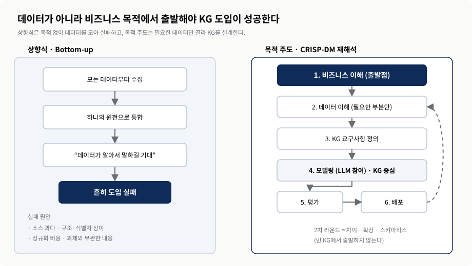
교재 §2.6(그림 2.13·2.14)을 재구성. KG는 재해석된 CRISP-DM 과정의 중심 지식 표현으로 기능한다.7.2 KG·LLM 도입 판단
표 8은 Chapter 1의 판단 질문을 두 블록으로 정리한다. 저자는 이 질문 가운데 하나라도 “예”라면 KG 기반 솔루션을 강화하기 위해 LLM이 필요하다고 결론 내린다. 왼쪽 질문은 관계와 출처를 명시적으로 다룰 KG의 가치를, 오른쪽 질문은 LLM을 추출·질의·설명 인터페이스로 결합할 이유를 드러낸다. 다만 실제 도입에서는 저자의 규칙을 출발점으로 삼되, 데이터 품질·검증 비용·위험·운영 책임까지 별도로 평가해야 한다.
| KG를 고려하라 | LLM을 고려하라 |
|---|---|
| 흩어진 데이터 사일로를 일관된 개관으로 조화 | 비정형 데이터에서 개체·관계 추출 |
| 정형·비정형 원천을 의미 있게 연결 | 정확한 답을 위해 복잡한 질의 해석 |
| 구조가 진화하는 유연한 데이터 표현 | 대화형 인터페이스 제공 |
| 파이프라인의 출처·일관성 추적 | 종합 결과를 글로 요약 |
| 고급 검색·추천 서비스 | → 저자의 규칙: 어느 질문이든 하나라도 “예”라면 KG 기반 솔루션을 강화할 LLM이 필요하다. 실무에서는 비용·위험·검증 체계도 함께 평가한다. |
| 네트워크 구조 시각화(커뮤니티·상호의존성) | |
| 관계적 성질에서 이점을 얻는 ML 적용 |
7.3 두 대표 사례로 확인하기
신약 발견과 개발. 생물학에서 화학까지 여러 분야의 지식을 통합해야 하고 비용·실패 위험이 큰 문제다. KG는 서로 다른 규모의 생물학적 개체(유전자·질병·약물)를 유형화된 관계로 연결해 이행적 연결과 추론을 가능하게 한다. LLM은 논문·임상 보고서·데이터베이스의 비정형 데이터를 처리해 통합 후보를 제안하고, 문헌에서 잠재적 관계를 추정하며 텍스트 마이닝을 돕는다. 이 결합은 데이터 통합, 가설 생성, 정보 검색을 개선할 수 있다. 다만 문헌에서 추출한 주장은 검증 상태와 출처를 함께 가져 가설과 확정 사실이 섞이지 않아야 한다.
고객 지원을 위한 대화형 AI. 개인화된 어시스턴트는 답하는 것뿐 아니라 필요하면 되물어야 한다. Zhang 등[Ch1 14]은 “대화는 흔히 지식을 중심으로 전개된다”고 말한다. KG는 그 개념들을 연결하고 관계를 세워 대화를 사실에 붙들어 매고 응답 생성을 뒷받침하며, LLM은 폭넓은 주제와 일관된 응답을 담당한다. 다만 추가 맥락의 뒷받침이 없으면 LLM의 응답은 뻔하고 깊이가 없어질 수 있다. 두 기술을 통합하면 시스템은 복잡한 질의를 헤쳐 나가고 정밀한 정보를 제공하며 자연스러운 대화 흐름을 유지한다.
7.4 이 책의 학습 로드맵
Chapter 1의 마지막은 이후 장의 순서를 명시한다. 먼저 목표→데이터→알고리즘 순서의 비즈니스 관점을 채택한다. 다음으로 미래 확장을 고려해 KG 스키마·분류체계·온톨로지를 모델링하고, 정형 소스의 개체·관계를 스키마에 매핑해 가져온다. 이어 LLM으로 텍스트에서 도메인 개체·관계 후보를 추출하되, 수집한 정보의 무결성과 정확성을 검증한다. 그 위에서 그래프 신경망 같은 최신 ML로 분석하고, 마지막에는 LLM을 이용한 자연어 질문으로 그래프 일부를 질의·시각화한다. 즉 이 두 장의 개념은 이후 구현 장 전체의 순서를 미리 제시하는 설계도다.
핵심 용어
| 용어 | 이 장에서의 의미 |
|---|---|
| 지식 그래프(KG) | 유형이 지정된 개체·속성·의미 있는 관계로 지식을 명시적으로 담은 진화형 그래프 구조. |
| 대규모 언어 모델(LLM) | 대규모 텍스트에서 토큰 패턴을 사전학습하고 다음 토큰을 예측해 자연어를 처리·생성하며, 지식을 통계 파라미터에 암묵적으로 담는 모델. |
| 생성형 AI(GenAI) | LLM이 이끄는, 새로운 텍스트·콘텐츠를 생성하는 AI. |
| 환각(Hallucination) | 모델이 그럴듯하지만 사실이 아닌 내용을 지어내는 현상. 최신·검증된 KG 근거를 검색하고 답을 검증하면 줄일 수 있다. |
| 노드·관계·속성 | KG의 세 요소. 노드=개체, 관계=연결의 의미, 속성=맥락 정보. |
| 홉(Hop) | 그래프에서 한 개념에서 다른 개념으로 건너가는 한 단계. |
| 전이 학습(Transfer Learning) | 일반 과제에서 배운 패턴을 특정 과제에 재사용하는 학습 방식. |
| 트랜스포머(Transformer) | 오늘날 LLM의 기반이 되는 신경망 아키텍처. |
| PLM(사전학습 언어 모델) | 대규모 말뭉치로 미리 학습된 언어 모델. LLM은 규모가 큰 PLM. |
| 토큰화(Tokenization) | 텍스트를 토큰이라는 작은 단위로 나누는 과정. |
| 데이터 중심 패러다임 | 모델 구조보다 데이터의 품질·양을 끌어올리는 데 집중하는 접근. |
| 상호참조 해소(Coreference Resolution) | 대명사 등이 어떤 개체를 가리키는지 문맥에서 해소하는 작업. |
| GraphRAG | 지식을 군집·커뮤니티 요약으로 조직해 최신 정보를 LLM에 공급하는 검색 증강 기법. |
| text-to-cypher | 자연어 질문을 그래프 질의 언어(Cypher)로 변환하는 패턴. |
| 단일 신뢰 원천(Single Source of Trust) | 지능적 행동의 근거를 식별자·의미·출처·검증 규칙으로 통일해 공유하는 지식 계층. 원본 데이터를 모두 복사한다는 뜻은 아니다. |
| RDF / SPARQL | 그래프를 트리플(진술)로 인코딩하는 W3C 표준과 그 질의 언어. 상호운용·연합에 강함. |
| LPG / openCypher / Gremlin | 노드·엣지의 속성과 구조를 강조하는 그래프 모델과 그 질의 언어. 순회에 강함. |
| 분류체계(Taxonomy) | 범주를 넓음–좁음의 수직 계층으로 조직한 것. |
| 온톨로지(Ontology) | 동일성·차이·서로소·개수 제약 등 개념 간 수평 규칙을 정의한 것. |
| KG의 네 기둥 | 진화(Evolution)·의미(Semantics)·통합(Integration)·학습(Learning). |
| 지능형 자문 시스템(IAS) | 통찰·권고를 제공하되 최종 결정은 사용자가 내리는 시스템. 이 책의 초점. |
| 지능적 경험(Intelligent Experience) | 예측이 맞을 때 가치를 키우고 틀릴 때 비용을 줄이며 사용자 피드백을 받도록 설계한 인터페이스 경험. |
| 오케스트레이션(Orchestration) | 여러 알고리즘·도구·검증 게이트를 연결하고 위험과 품질을 수명주기 전체에서 통제하는 과정. |
| 지식 습득(Knowledge Acquisition) | 데이터·환경·전문가로부터 정보를 수집해 구조화된 지식으로 변환하는 과정. |
| 추론(연역·귀납·확률적) | 전제·관찰·패턴으로부터 결론을 이끄는 인지 과정의 세 유형. |
| 추론 엔진 / 피드백 루프 | KB를 읽고 쓰는 엔진과, 조치→환경→관찰→새 지식으로 이어지는 반복 순환. |
| CRISP-DM | 정립된 ML 프로젝트 방법론. 비즈니스 이해에서 출발하는 목적 주도 KG 구축의 토대. |
| 상향식 / 목적 주도 | 모든 데이터부터 통합하는 방식(흔히 실패) vs 비즈니스 목표가 데이터·구조를 이끄는 방식. |
| 스키마리스(Schemaless) | 저장 구조를 점진적으로 확장하기 쉬운 성질. 목적·무결성·재사용을 위한 논리 스키마까지 불필요하다는 뜻은 아니다. |
| 반사실적 과제(Counterfactual Task) | 기본값·익숙한 형태에서 벗어난 과제. LLM의 성능이 저하되는 지점. |
참고 자료와 도형 출처
Chapter 1의 참고문헌 번호와 Chapter 2의 참고문헌 번호는 서로 독립된 체계다. 본문 인용은 [Ch1 N], [Ch2 N]로 구분해 표기했다. 아래 목록은 본문에서 인용한 항목만 정리했으며, 정확한 저자·연도가 확인되지 않는 항목은 지어내지 않고 성격만 기재한다.
- 교재Alessandro Negro. Knowledge Graphs and LLMs in Action, Chapter 1 “Knowledge graphs and LLMs: A killer combination” · Chapter 2 “Intelligent systems: A hybrid approach.” Manning Publications. 본 리포트의 1차 교재.
- Ch1 1“AI의 제3의 물결(third wave of AI)” 관련 문헌. 맥락 기반 AI 논의.
- Ch1 2일반 과제에서 배운 패턴을 특정 과제에 재사용하는 전이 학습 관련 문헌.
- Ch1 3사전학습 언어 모델의 기반이 되는 Transformer 아키텍처 관련 문헌.
- Ch1 8“The Unreasonable Effectiveness of Data.” 데이터의 규모·품질이 성능에 미치는 효과에 관한 논의.
- Ch1 9“Scaling Laws for Neural Language Models.” 더 큰 모델의 샘플 효율과 함께 학습 코퍼스 규모의 중요성을 다룬 논문.
- Ch1 10KG로 완화 가능한 LLM 약점(환각·오래된 정보·설명 가능성)에 관한 문헌.
- Ch1 11LLM과 KG의 상호 보완 구조에 관한 문헌. 그림 7(상호 보완 매트릭스)의 영감 출처.
- Ch1 12McKinsey & Company. 데이터 파편화 해소 시 단기 연간 데이터 지출 5~15% 절감에 관한 리포트.
- Ch1 13KG의 의미(semantics)와 설명 가능성(explainability)에 관한 문헌.
- Ch1 14Zhang 외. 대화형 시스템 관련 연구. “대화는 흔히 지식을 중심으로 전개된다”는 인용의 출처.
- Ch1 15그래프에 의미를 부여하는 조직 원리(분류체계·온톨로지)에 관한 문헌.
- Ch2 1Geoff Hulten. Building Intelligent Systems. 지능형 시스템의 정의(사용자를 지원하고 상호작용으로 진화)의 출처.
- Ch2 4Wu 외. LLM의 반사실적(counterfactual) 과제 성능 저하를 보인 연구(11개 과제 평가).
- Ch2 12CRISP-DM. 정립된 ML/데이터 마이닝 프로젝트 방법론. 목적 주도 KG 구축의 토대.
- 외부구글 Knowledge Graph의 “things, not strings” 발상 · RDF/SPARQL(W3C) · openCypher · Apache TinkerPop Gremlin은 본문에서 언급한 공개 기술·표준이다.
- 도형그림 1–13은 ds4th study가 교재의 개념·서술을 재구성해 새로 작성한 발표용 도해다. 1=§1.1 병목, 2=그림 1.1, 3=그림 1.6, 4=그림 1.2, 5=그림 1.3, 6=그림 1.4, 7=그림 1.5, 8=§1.6, 9=그림 2.1·2.4·2.10 종합, 10=그림 2.6·2.7, 11=그림 2.11·2.12, 12=그림 2.10, 13=그림 2.13·2.14. 교재 원본 그림을 복제하지 않았다.
본문은 교재의 논지를 발표자의 언어로 요약·재구성했다. 실제 도입 시에는 원 논문, 제품 문서, 개인정보·의료 안전·보안·규제 요구사항을 별도로 확인해야 한다.